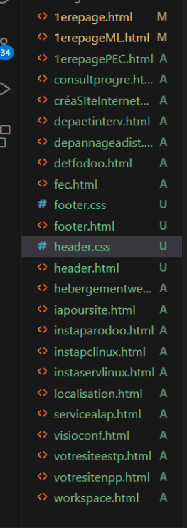
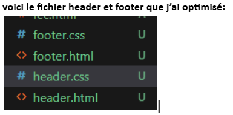
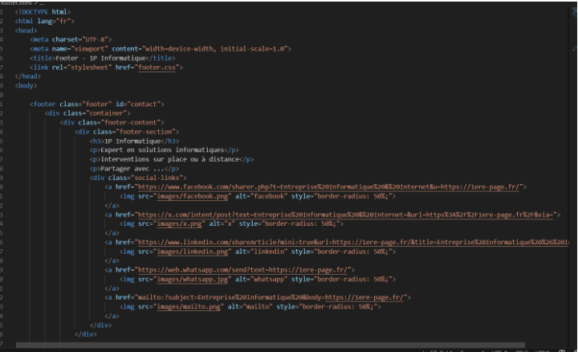
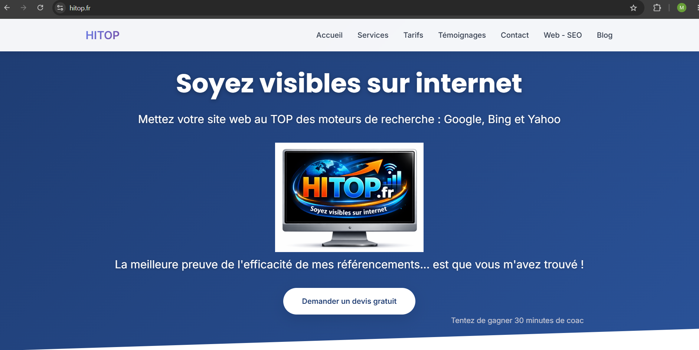

Cette compétence correspond à ma progression pendant le stage : recherche autonome, apprentissage du SEO, utilisation de Git, configuration Linux en visio et structuration progressive du code.
veille sur le SEO et le développement web,
utilisation de Git pour suivre les versions,
optimisation du code avec des fichiers communs,
prise de notes et organisation personnelle chaque semaine.

Suivi du projet : fichiers organisés et versionnés

Progression technique : header/footer optimisés

Apprentissage : structuration et amélioration du code

Veille SEO : application des notions vues pendant le stage
Compétences mobilisées
GitVeille SEODocumentation techniqueOptimisation du codeOrganisation personnelle